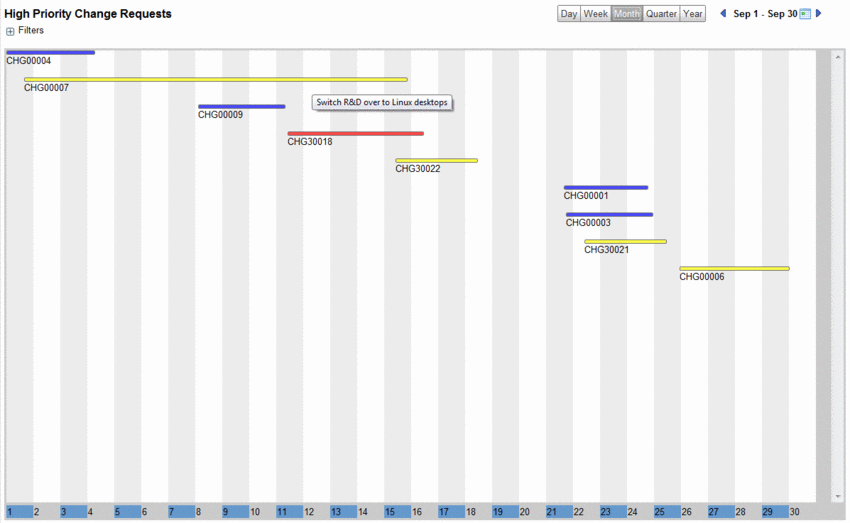
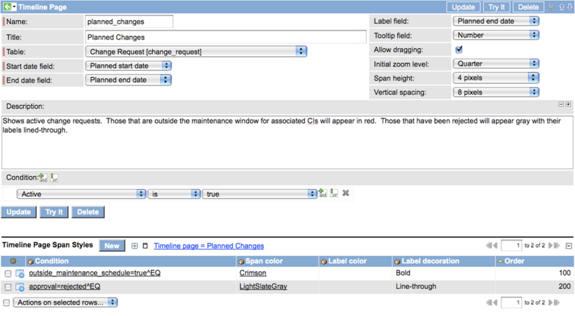
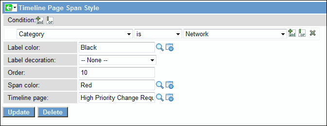
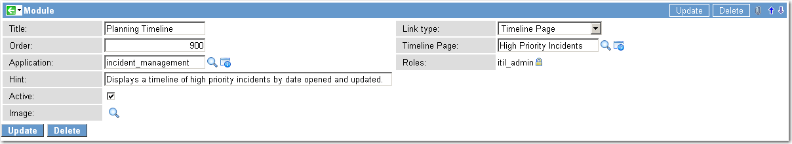

Legacy:Timeline
| |
Functionality described here is obsolete since the Spring 2010 Stable 2 release and has been replaced by Timeline Pages. |
Contents
1 Overview
The Timeline Plugin enables you to create linear timelines for any activity in ServiceNow tables that is bounded by two dates, such as the start and end date of a change request or the open and close date of an incident. You can then make selected timelines available to your users by creating new modules that are accessible to users with specific roles. Timelines are displayed in a format that can be configured to show daily to yearly views. Each specific activity on a table is represented by a span, which is displayed as a horizontal bar on the timeline and can appear in any color. You can select a field whose value you want to use as a dynamic span label, and then define any color or font attributes for that label. Add tooltips to each span from a list of fields to show additional information about the activity, such as the priority, number, or assignment group.
You can specify whether spans on the timeline can be dragged, allowing users to adjust the dates for selected records. For example, an administrator can grant access to the Timeline feature to ITIL users and enable them to edit the start and end dates of a change request. Conversely, the administrator can lock a timeline for tables such as the incident table, where changing the open and close dates does not make sense. For details on timeline navigation, filtering, and working with calendar perspectives, see Using Timelines.
| |
Note: The maximum number of spans you are allowed to create for a timeline is controlled by a setting in System Properties --> UI Properties. The default is set at 1000 spans. |
|  |
{kind=link}
2 Administering Timeline Pages
To create a timeline:
- Install the Timeline Plugin.
- Navigate to System UI --> Timeline Pages and click New.
- Complete the Timeline Pages form using the following fields:
| Field | Input Value |
| Name | Type a unique name for your timeline record. An example of a name for a change request timeline might be change_high_priority. |
| Title | Type the title you want to appear at the top of your timeline calendar page. An example of this might be High Priority Change Requests. |
| Description | Describe your timeline in detail so other users will understand its purpose. |
| Table | Select the table from the list for the activity that your timeline will show. |
| Start date field | Choose the field from the table you selected that shows the start date for your timeline activity. For example, in the change_request table, select the Planned start date field from the list. |
| End date field | Choose the field from the table you selected that shows the end date for your timeline activity. For example, in the change_request table, select the Planned end date field from the list. |
| Label field | Choose a field from the table you selected that the timeline can use as a span label. You might select the Number field for this. The label appears below the span. |
| Tooltip field | Choose a field from the table you selected whose value is displayed as a tooltip when a user rolls the cursor over the span. You might select the Short description field for this. |
| Allow dragging | Select this check box if you want to enable users to change start and end dates in specific database records by dragging the span. This might be desirable in the change_request table, but not in the incident table. |
| Initial zoom level | Select the initial view for your timeline calendar - Day, Week, Month, Quarter, or Year. |
| Span height | Select a measurement for the height of the span (in pixels). |
| Vertical spacing | Select a measurement for the vertical spacing between spans (in pixels). |
| Description | Type a detailed description of this timeline page. This is used for reference only. |
| Conditions | Select the conditions under which the records should be displayed. For example, you might select Priority --> is --> 2 - High. If you do not define a condition, the timeline will display all records for the selected table. |
When you have completed the available fields, click Save. The record remains displayed and the Timeline Page Span Styles related list appears at the bottom of the record, enabling you to configure the display characteristics of your timeline spans. A completed Timeline Page record looks like this:
|  |
{kind=link}
2.1 Applying Styles and Color
To apply color and font styles to specific spans, scroll down to Timeline Page Span Style, and then click New. Each span style that you configure is controlled by the order that you give it. The platform evaluates each record in the table until it finds one that matches the style conditions you have specified. If more than one matching condition exists, the platform uses the style with the lowest order value.
The styles configuration form provides the following fields:
| Field | Input Value |
| Condition | Specify a style condition or conditions to alter the appearance of certain records on the Timeline Page. For example, for a Timeline Page configured to display high priority change requests, you can create a style condition that displays a different color timeline for each assignment group. |
| Label color | Select a display color for the span label from the Color Definition list. |
| Label decoration | Select the font style for the span label from the list, such as Bold or Italic. |
| Order | Type the sequence in which this condition should be evaluated if more than one matching condition exists. The order is evaluated from the lowest value to the highest value. |
| Span color | Select the color of the span from the Color Definition list. |
| Timeline page | Names the timeline page for which this style record is configured. |
A completed Timeline Page Span Style record looks like this:
|  |
{kind=link}
2.2 Timeline Pages Module
In the default ServiceNow system, the Timeline Pages feature is accessible to Administrators only. You can make selected timelines available to users with other roles, such as ITIL users, by creating a Timeline Page Module within an application and defining the roles that can access it.
To create a Timeline Pages Module:
- Right-click an application (such as Change) in the navigation pane and select Edit application.
- In the application Module list, click New.
- Complete the following fields:
| Field | Input Value |
| Title | Type the title of the module as it will appear in the module list in the navigation pane. For example, you might use Planning Timeline. |
| Order | Type the sequence in which this condition should be evaluated if more than one matching condition exists. The order is evaluated from the lowest value to the highest value. |
| Application | Select the parent application for your new module. |
| Hint | Type a brief description of the module that appears as hover text when the user places the cursor over the module name. For example, you might enter Weekly view of high priority changes. |
| Active | Enable or disable the module for the roles defined. |
| Image | Select an appropriate icon to appear with the module name. |
| Link type | Select Timeline Pages. |
| Timeline Page | Select the timeline page you want to appear in this module. For Change Mangement, you select a change-related timeline, for Incident Management, an incident related timeline, and so on. |
| Roles | Select the roles that can access this module. |
The completed module form looks like this:
|  |
{kind=link}